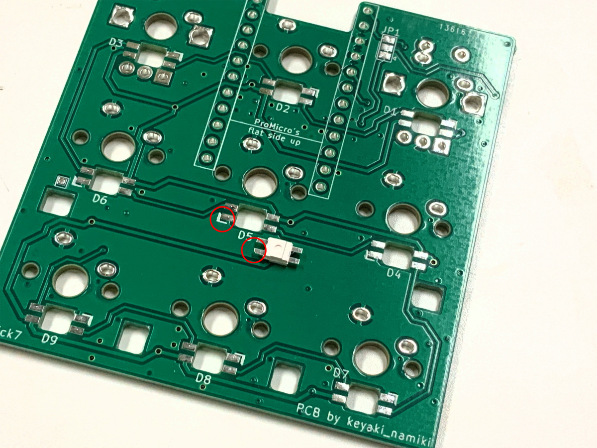
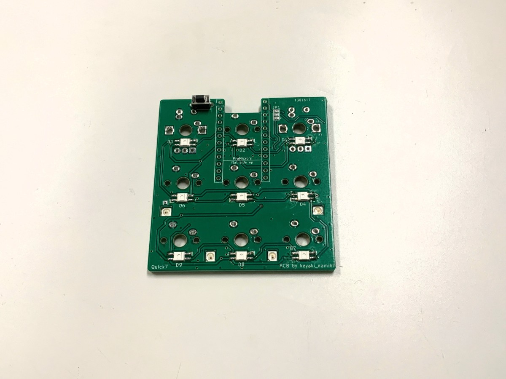
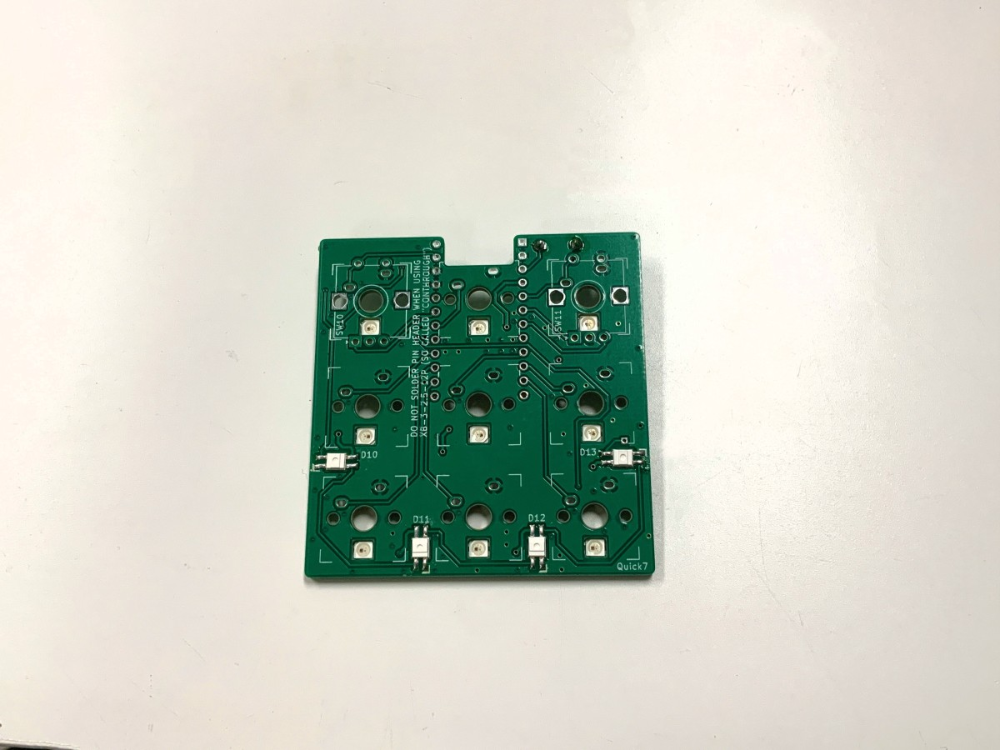
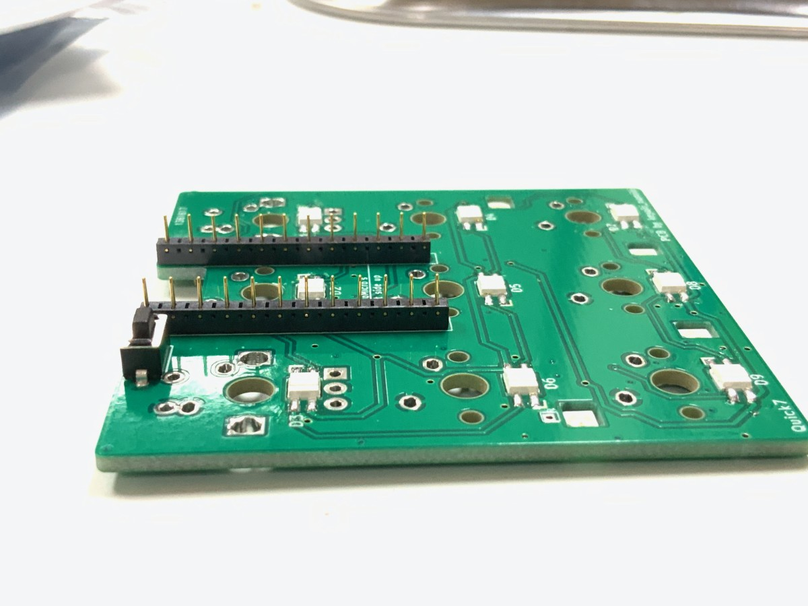
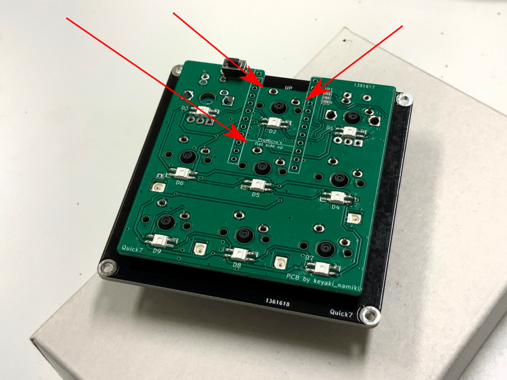
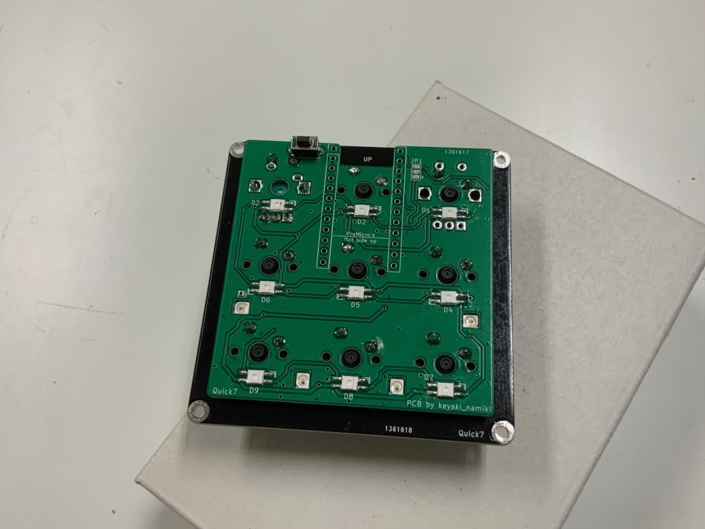
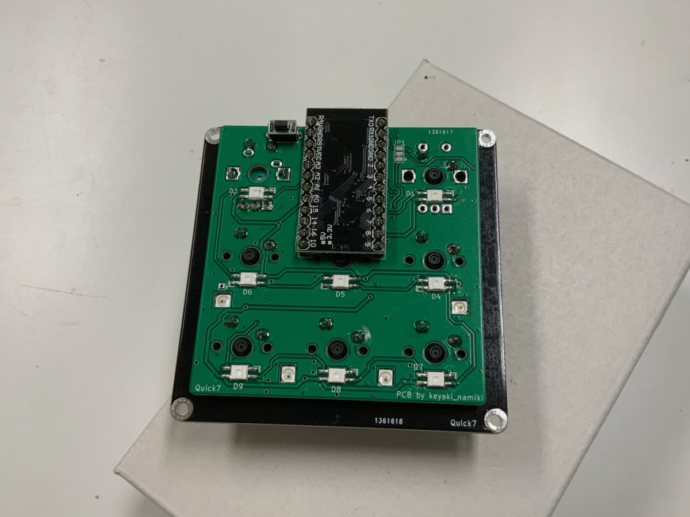

Quick7 ビルドガイド
English Build guide is here
必要な部品

| 部品名 | 数量 | 備考 |
|---|---|---|
| 基板 | 1枚 | |
| トッププレート | 1枚 | |
| ボトムプレート | 1枚 | |
| Pro Micro 又は 互換品 | 1個 | Sparkfun製Qwiic Pro Microには対応していません |
| コンスルー | 2本 | MAC8製 XB-3-2.5-12P |
| タクトスイッチ | 1個 | リセットスイッチ用 |
| M2スペーサー 10mm | 4本 | ミドルプレートを使う場合、平径3mmのもの |
| M2ネジ 4mm | 8本 | |
| Cherry MX互換キースイッチ | 9個 | ロータリーエンコーダーを使う場合、7個又は8個 |
| Cherry MX互換キーキャップ | 9個 | ロータリーエンコーダーを使う場合、7個又は8個 |
| ゴム足 | 4個 | |
オプション部品
| 部品名 | 数量 | 備考 |
|---|---|---|
| アクリルミドルプレート | 1個 | 厚さ10mmのもの |
| LED(YS-SK6812MINI-E) | 13個 | バックライト、アンダーグロー用 |
| ロータリーエンコーダー | 1~2個 | Alps EC12E互換のもの、プッシュスイッチ対応 |
| ロータリーエンコーダー用ノブ | 1~2個 | 使用するロータリーエンコーダーの軸に対応したもの |
必要な道具
| 名称 | 備考 |
|---|---|
| はんだごて | LEDを使用する場合は調温機能のついたもの |
| はんだ線 | 0.6mm~0.8mmのもの |
| ニッパー | |
| ドライバー | PH1のもの |
回路図はこちら
組み立ての前に
作業の前に必ずこのビルドガイドの最後まで目を通してください。 以降の作業では非常に熱いはんだごてを扱います。作業の途中に席を離れる際は電源を切るなど、やけどや怪我には十分注意してください。
組み立ての手順
大まかな流れは以下のとおりです。それぞれ順を追ってみていきましょう。
- LEDのはんだ付け
- リセットスイッチのはんだ付け
- コンスルーのはんだ付け
- キースイッチの取り付け
- ロータリーエンコーダーの取り付け
- キースイッチ、ロータリーエンコーダーのはんだ付け
- Pro Microの取り付け
- ファームウェアの書き込み、動作確認
- スペーサーの取り付け
- キーキャップとノブ、ゴム足の取り付け
1. LEDのはんだ付け
4本出ている脚のうち切り欠きのある部分を」印のある位置に合わせておき、はんだ付けします。 それぞれの行で向きが変わることに気をつけてください。
使用するLEDは熱に弱いため、はんだごての温度は270℃以下に設定することをお勧めします。 LED以外の部品については一定の耐熱があるので320℃程度で使用できます。


UnderGlow LEDを使用する場合は、この穴を使いウラ面からはんだ付けします。

2. リセットスイッチのはんだ付け
基板上Resetとある位置にタクトスイッチを取り付け、はんだ付けします。

ここまでのはんだ付けが終わった状態(ウラ面)

(オモテ面)

3. コンスルーのはんだ付け
左右とも同じほうから穴が見えるように置き、Pro Micro 又は Elite-Cとコンスルーをはんだ付けします。写真緑の基板とコンスルーははんだ付けしません。

はんだ付けしたPro Microは一度取り外します。

4. キースイッチの取り付け
トッププレートの向きと裏表に気をつけながら、すべて同じ向きになるようにキースイッチをはめ込みます。

5. ロータリーエンコーダーの取り付け(オプション)
基板おもて側、白丸のある面からロータリーエンコーダーを取り付けます。

6. キースイッチ、ロータリーエンコーダーのはんだ付け
キースイッチをはんだ付けする前に、Pro Microと干渉する部分の脚をニッパーで切り落とします。

脚をカットしたら、はんだ付けします。

(使用する場合)あわせてロータリーエンコーダーもはんだ付けします。

7. Pro Microの取り付け
一度取り外したPro Microを再び基板に取り付けます。

8. ファームウェア書き込み、動作確認
Quick7はファームウェアとしてQMK Firmwareを使用しています。公式のDocsの通りに環境を用意し、書き込みます。
9. スペーサーの取り付け
四隅の穴にスペーサーを取り付けます。

ミドルプレートを使う場合、ここであわせて取り付けます。

10. キーキャップ、ノブの取り付け
最後にキーキャップとノブ、ゴム足を取り付けて完成です。